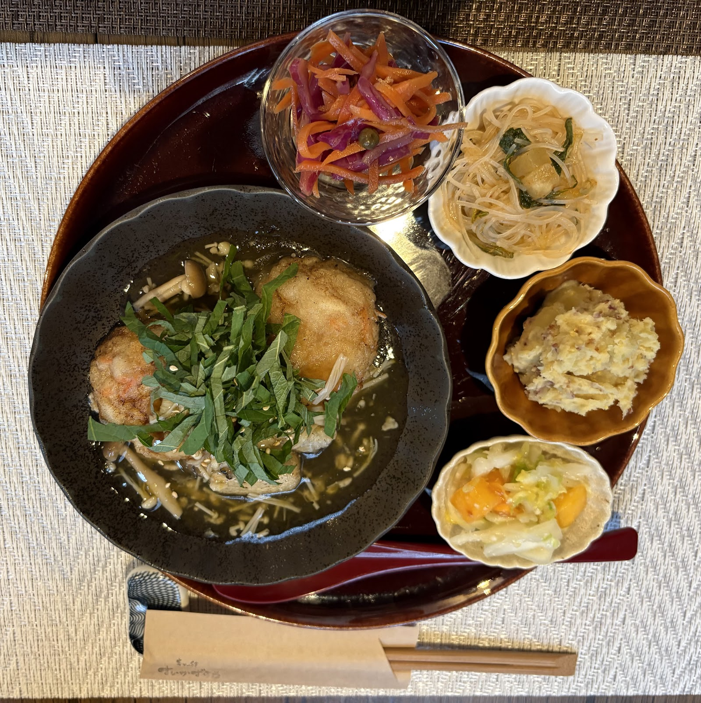
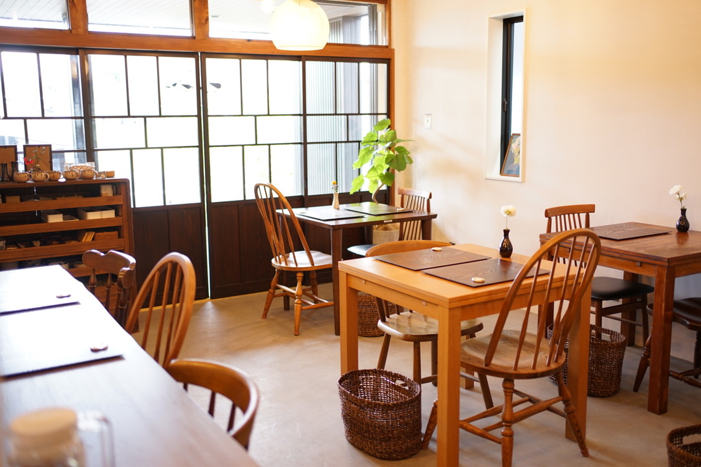
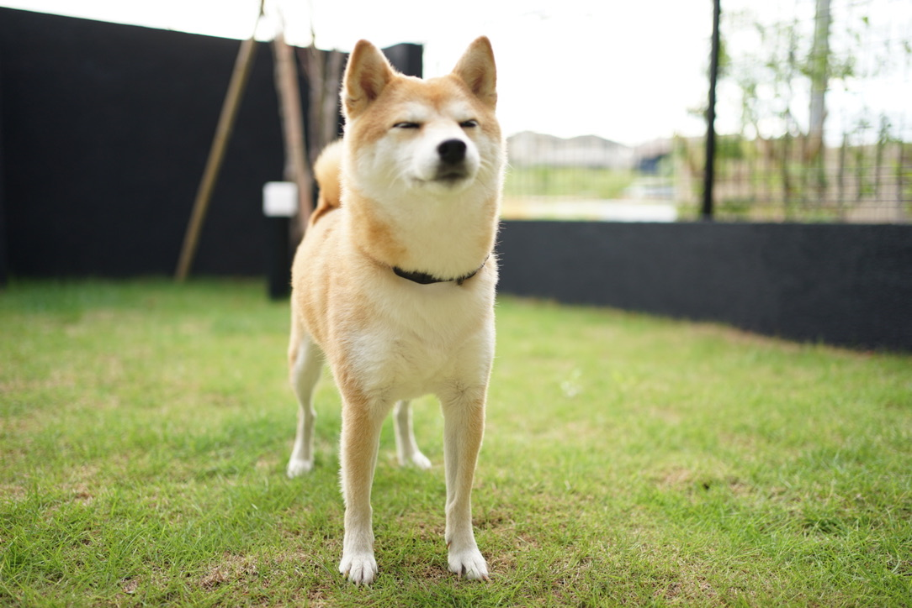
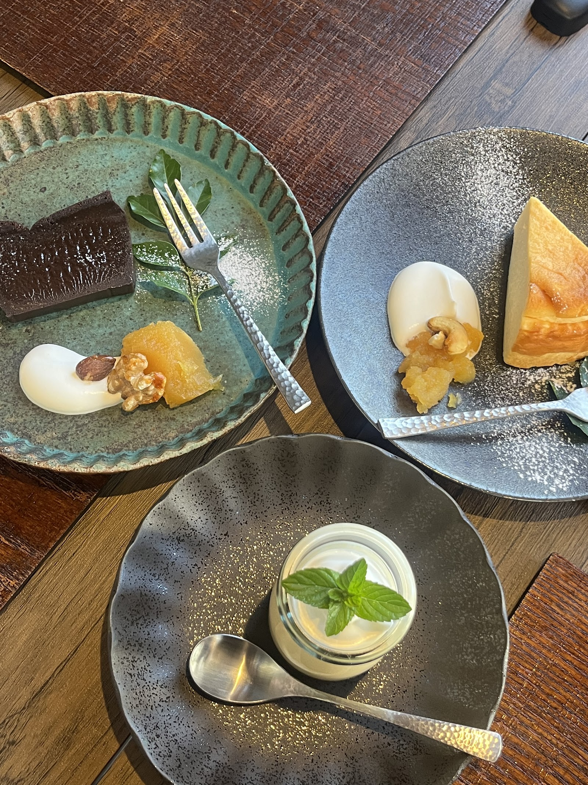

麹の恵みと、手作りの温もり。流山の隠れ家カフェへ、ようこそ。
キッコーマンアリーナ近く、和モダンな空間で味わう月替わりのワンプレートランチ。愛犬と、ご家族と、大切な人と過ごすゆっくりとした時間を、café すいかずらで。
写真: Asobi -（Googleマップ）
Point
café すいかずらの魅力

毎月出会う、やさしい一皿
麹など、体にやさしい食材を取り入れた月替わりのワンプレートランチ。栄養バランスと彩りを大切にした主菜に、手作りの副菜・小鉢を何品も添えて、季節の移ろいをお楽しみいただけます。
写真: happy MW（Googleマップ）

和モダンな、隠れ家の時間
木の温もりと自然光が心地よい、落ち着いた店内。派手さはなくとも清潔感のある空間で、日常からそっと離れたひとときをお過ごしいただけます。
写真: café すいかずら（Googleマップ）

愛犬と過ごせるテラス席
隣接する小さなドッグランで愛犬にひと休みしてもらいながら、テラス席でのんびりと。おむつ交換台のご用意など、お子様連れへの配慮もいたしております。
写真: café すいかずら（Googleマップ）

写真: Zoom Zoom（Googleマップ）
Menu
月替わりのお料理について
主菜と数種の手作り副菜を組み合わせたワンプレートランチを中心に、手作りデザートやこだわりのドリンクもご用意しています。詳しい内容は「お料理について」のページでご紹介しています。
お料理についてはこちらVoice
お客様の声
★ Google評価 4.5（口コミ33件）流山の美味しいランチを探しているときに出会ったお店。メインメニューは月毎に変更され、麹を使ったなど、身体に優しいメニューを提供されています。
今回はアクアパッツァを選択。4種の副菜が添えられ味、栄養、色彩のバランスが取れた構成となっています。
健康志向だと物足りないことも良くありますが、味はしっかり目、ボリュームもあり食べごたえがありました。
店内は落ち着いたデザインで統一されており居心地の良い空間となっています。
ドリンクも意趣を凝らしたものが多く、次の機会に楽しみたいと思います。
スタッフの皆様も感じが良く、また訪れたいと思うお店でした。
クレジット、PayPay決済可
写真: café すいかずら（Googleマップ）
Terrace
テラス席・わんちゃん同伴について
愛犬と一緒に過ごせるテラス席と、隣接する小さなドッグラン。お子様連れにも安心してご利用いただけるよう配慮した設備もご案内しています。
テラス・わんちゃん同伴について見るAccess
アクセス
キッコーマンアリーナ近くの、隠れ家的な立地にございます。お店の少し手前にある月極駐車場内に駐車スペースをご用意しています。
| 住所 | 〒270-0151 千葉県流山市後平井105-3 |
|---|---|
| 営業時間・定休日 | 営業時間・定休日は変更となる場合がございます。最新情報は公式Instagramにてご確認ください。 |